微信⼩程序，简称⼩程序，英⽂名 Mini Program ，是⼀种不需要下载安装即可使⽤的应⽤，它实现
了应⽤“触⼿可及”的梦想，⽤⼾扫⼀扫或搜⼀下即可打开应⽤
1.1. 为什么是微信⼩程序 ？
微信有海量⽤⼾，⽽且粘性很⾼，在微信⾥开发产品更容易触达⽤⼾；
推⼴app 或公众号的成本太⾼。
开发适配成本低。
容易⼩规模试错，然后快速迭代。
跨平台。
1.2. 微信⼩程序历史
应⽤号
2016年1⽉11⽇，微信之⽗张⼩⻰时隔多年的公开亮相，解读了微信的四⼤价值观。张⼩⻰指出，
越来越多产品通过公众号来做，因为这⾥开发、获取⽤⼾和传播成本更低。拆分出来的服务号并没
有提供更好的服务，所以微信内部正在研究新的形态，叫「微信⼩程序」 需要注意的是，之前是叫
做
2016年9⽉21⽇，微信⼩程序正式开启内测。在微信⽣态下，触⼿可及、⽤完即⾛的微信⼩程序引
起⼴泛关注。腾讯云正式上线微信⼩程序解决⽅案，提供⼩程序在云端服务器的技术⽅案。
2017年1⽉9⽇，微信推出的“⼩程序”正式上线。“⼩程序”是⼀种⽆需安装，即可使⽤的⼿
机“应⽤”。不需要像往常⼀样下载App，⽤⼾在微信中“⽤完即⾛”。
1.3. 疯狂的微信⼩程序
微信⽉活已经达到10.82亿。其中55岁以上的⽤⼾也达到6300万
信息传达数达到450亿，较去年增⻓18%;视频通话4.1亿次,增⻓100%
⼩程序覆盖超过200+⾏业，交易额增⻓超过6倍，服务1000亿+⼈次,创造出了5000亿+的商业价值
传智播客-黑马程序员
1.4. 还有其他的⼩程序 不容忽视
⽀付宝⼩程序
百度⼩程序
QQ⼩程序
今⽇头条 + 抖⾳⼩程序
1.5. 体验
1.5.1. 官⽅微信⼩程序体验
1.5.2. 其他优秀的第三⽅⼩程序
拼多多
滴滴出⾏
欢乐⽃地主
智⾏⽕⻋票
唯品会
。。。
2. 环境准备
开发微信⼩程序之前，必须要准备好相应的环境
2.1. 注册账号
建议使用全新的邮箱，没有注册过其他小程序或者公众号的。
传智播客-黑马程序员
2.2. 获取APPID

由于后期调⽤微信⼩程序的接⼝等功能，需要索取开发者的⼩程序中的 APPID ，所以在注册成功后，
可登录，然后获取APPID。
登录，成功后可看到如下界⾯
然后复制你的APPID,悄悄的保存起来，不要给别⼈看到😄。
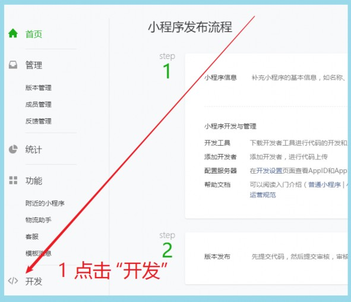
传智播客-黑马程序员
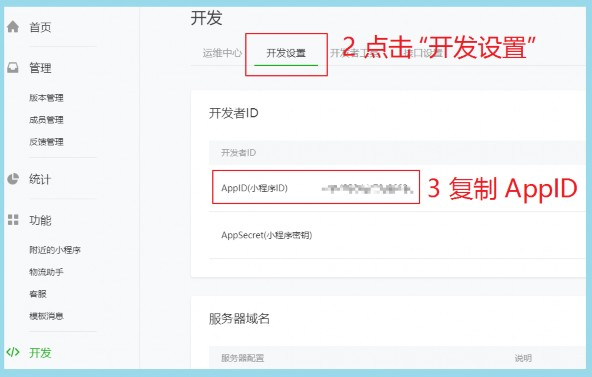
2.3. 开发⼯具
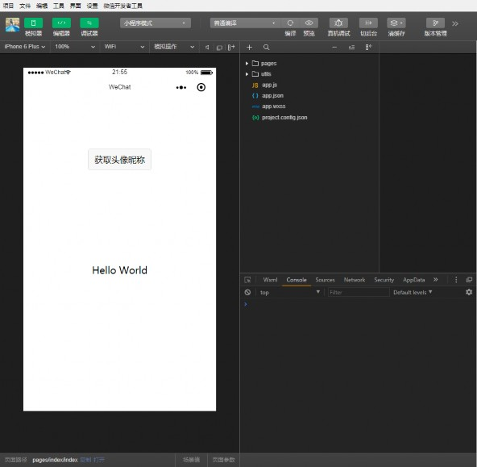
传智播客-黑马程序员
开发 预览 调试 发布
微信⼩程序⾃带开发者⼯具，集 于⼀⾝的 完整环境。
但是由于编码的体验不算好，因此 建议使⽤
vs code
+ 微信小程序编辑工具 来实现编码
vs code
负责敲代码， 微信编辑工具 负责预览
3. 第⼀个微信⼩程序
3.1. 打开微信开发者⼯具
注意 第⼀次登录的时候 需要扫码登录
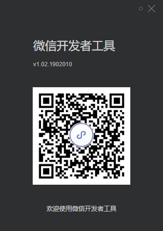
3.2. 新建⼩程序项⽬
传智播客-黑马程序员
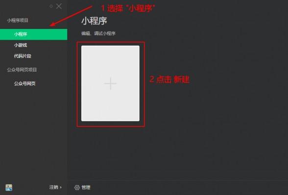
3.3. 填写项⽬信息
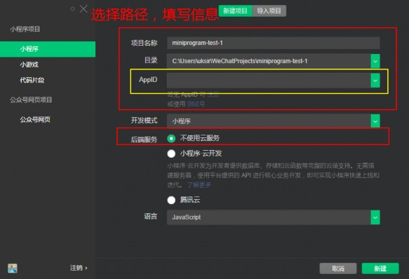
3.4. 成功
传智播客-黑马程序员
4. 微信开发者⼯具介绍
传智播客-黑马程序员
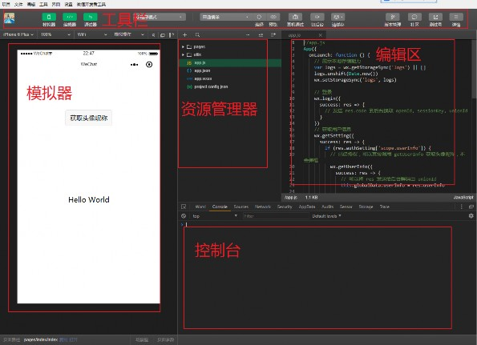
5. ⼩程序结构⽬录
⼩程序框架的⽬标是通过尽可能简单、⾼效的⽅式让开发者可以在微信中开发具有原⽣ APP 体验的服
务。
⼩程序框架提供了⾃⼰的视图层描述语⾔ WXML 和 WXSS ，以及 JavaScript ，并在视图层与逻
辑层间提供了数据传输和事件系统，让开发者能够专注于数据与逻辑。
5.1. ⼩程序⽂件结构和传统web对⽐
结构 | 传统web | 微信⼩程序 |
结构 | HTML | WXML |
样式 | CSS | WXSS |
逻辑 | Javascript | Javascript |
配置 | ⽆ | JSON |
配置.json
通过以上对⽐得出，传统web 是三层结构。⽽微信⼩程序 是四层结构，多了⼀层
5.2. 基本的项⽬⽬录
传智播客-黑马程序员
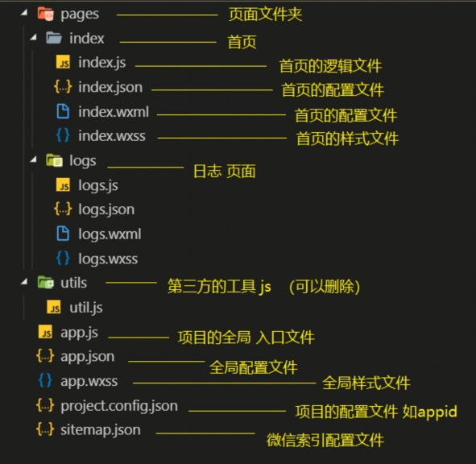
6. ⼩程序配置⽂件
⼀个⼩程序应⽤程序会包括最基本的两种配置⽂件。⼀种是全局的
page.json
app.json
和 ⻚⾯⾃⼰的
注意：配置文件中不能出现注释
app.json
是当前⼩程序的全局配置，包括了⼩程序的所有⻚⾯路径、界⾯表现、⽹络超时时间、底
部 tab 等。普通快速启动项⽬⾥边的 app.json 配置
传智播客-黑马程序员
{
"pages":[
"pages/index/index",
"pages/logs/logs"
],
"window":{
"backgroundTextStyle":"light",
"navigationBarBackgroundColor": "#fff",
"navigationBarTitleText": "WeChat",
"navigationBarTextStyle":"black"
}
}
字段的含义
pages
字段 ⸺ ⽤于描述当前⼩程序所有⻚⾯路径，这是为了让微信客⼾端知道当前你的⼩程序
⻚⾯定义在哪个⽬录。
window 字段 ⸺ 定义⼩程序所有⻚⾯的顶部背景颜⾊，⽂字颜⾊定义等。
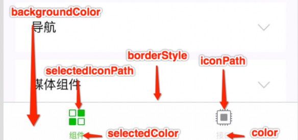
这⾥的
page.json
其实⽤来表⽰⻚⾯⽬录下的
page.json
这类和⼩程序⻚⾯相关的配置。
开发者可以独⽴定义每个⻚⾯的⼀些属性，如顶部颜⾊、是否允许下拉刷新等等。
⻚⾯的配置只能设置
app.json
中部分 window 配置项的内容，⻚⾯中配置项会覆盖
app.json
的 window 中相同的配置项。
传智播客-黑马程序员
属性 | 类型 | 默认值 | 描述 |
navigationBarBackgroundColor | HexColor | #000000 | 导航栏背景颜⾊，如 #000000 |
navigationBarTextStyle | String | white | 导航栏标题颜⾊，仅⽀持 black / white |
navigationBarTitleText | String | 导航栏标题⽂字内容 | |
backgroundColor | HexColor | #ffffff | 窗⼝的背景⾊ |
backgroundTextStyle | String | dark | 下拉 loading 的样式，仅⽀持 dark / light |
enablePullDownRefresh | Boolean | false | 是否全局开启下拉刷新。 详⻅ Page.onPullDownRefresh |
onReachBottomDistance | Number | 50 | ⻚⾯上拉触底事件触发时距⻚⾯底部距离，单位为px。 详⻅ |
disableScroll | Boolean | false | 设置为 true 则⻚⾯整体不能上下滚动；只在⻚⾯配置中有 |
⼩程序根⽬录下的
sitemap.json
⽂件⽤于配置⼩程序及其⻚⾯是否允许被微信索引。
7. 模板语法
WXML（WeiXin Markup Language）是框架设计的⼀套标签语⾔，结合基础组件、事件系统，可以构
建出⻚⾯的结构。
7.1. 数据绑定
7.1.1. 普通写法
<view> {{ message }} </view>
Page({
data: {
message: 'Hello MINA!'
}
})
7.1.2. 组件属性

<view id="item-{{id}}"> </view>
Page({
data: {
id: 0
}
})
不要直接写 checked= false ，其计算结果是⼀个字符串
<checkbox checked="{{false}}"> </checkbox>
传智播客-黑马程序员
7.2. 运算
7.2.1. 三元运算
<view hidden="{{flag ? true : false}}"> Hidden </view>
7.2.2. 算数运算
<view> {{a + b}} + {{c}} + d </view>
Page({
data: {
a: 1,
b: 2,
c: 3
}
})
7.2.3. 逻辑判断
<view wx:if="{{length > 5}}"> </view>
7.2.4. 字符串运算
<view>{{"hello" + name}}</view>
Page({
data:{
name: 'MINA'
}
})
7.2.5. 注意
花括号和引号之间如果有空格，将最终被解析成为字符串
7.3. 列表渲染
项的变量名默认为 item wx:for-item 可以指定数组当前元素的变量名
下标变量名默认为 index wx:for-index 可以指定数组当前下标的变量名
wx:key ⽤来提⾼数组渲染的性能
wx:key 绑定的值 有如下选择
string
类型，表⽰ 循环项中的唯⼀属性 如
传智播客-黑马程序员
list:[{id:0,name:"炒饭"},{id:1,name:"炒面"}]
wx:key="id"
保留字
*this
，它的意思是 item 本⾝ ，*this 代表的必须是 唯⼀的字符串和数组。
list:[1,2,3,4,5]
wx:key="*this"
代码：

<view wx:for="{{array}}" wx:key="id">
{{index}}: {{item.message}}
</view>
Page({
data: {
array: [{
id:0,
message: 'foo',
}, {
id:1,
message: 'bar'
}]
}
})
渲染⼀个包含多节点的结构块 block最终不会变成真正的dom元素
<block wx:for="{{[1, 2, 3]}}" wx:key="*this" >
<view> {{index}}: </view>
<view> {{item}} </view>
</block>
7.4. 条件渲染
在框架中，使⽤ wx:if="{{condition}}" 来判断是否需要渲染该代码块：
<view wx:if="{{false}}">1</view>
<view wx:elif="{{true}}">2</view>
<view wx:else>3</view>
<view hidden="{{condition}}"> True </view>
类似 wx:if
频繁切换 ⽤ hidden
传智播客-黑马程序员
不常使⽤ ⽤ wx:if
8. ⼩程序事件的绑定
⼩程序中绑定事件，通过bind关键字来实现。如 bindtap bindinput bindchange 等
不同的组件⽀持不同的事件，具体看组件的说明即可。
<input bindinput="handleInput" />
Page({
// 绑定的事件
handleInput: function(e) {
console.log(e);
console.log("值被改变了");
}
})
8.3. 特别注意
以下为错误写法

绑定事件时不能带参数 不能带括号
<input bindinput="handleInput(100)" />
事件传值 通过标签⾃定义属性的⽅式 和 value
<input bindinput="handleInput" data-item="100" />
事件触发时获取数据
handleInput: function(e) {
// {item:100}
console.log(e.currentTarget.dataset)
// 输入框的值
console.log(e.detail.value);
}
WXSS( WeiXin Style Sheets )是⼀套样式语⾔，⽤于描述 WXML 的组件样式。
CSS
与 相⽐，WXSS 扩展的特性有：
响应式⻓度单位 rpx
样式导⼊
传智播客-黑马程序员
9.1. 尺⼨单位
rpx （responsive pixel）: 可以根据屏幕宽度进⾏⾃适应。规定屏幕宽为 750rpx 。如在
iPhone6 上，屏幕宽度为 375px ，共有750个物理像素，则 750rpx = 375px = 750物理像
素 ， 1rpx = 0.5px = 1物理像素 。
设备 | rpx换算px (屏幕宽度/750) | px换算rpx (750/屏幕宽度) |
iPhone5 | 1rpx = 0.42px | 1px = 2.34rpx |
iPhone6 | 1rpx = 0.5px | 1px = 2rpx |
iPhone6 Plus | 1rpx = 0.552px | 1px = 1.81rpx |
建议： 开发微信⼩程序时设计师可以⽤ iPhone6 作为视觉稿的标准。
使⽤步骤：
确定设计稿宽度 pageWidth
计算⽐例 750rpx = pageWidth px ,因此 1px=750rpx/pageWidth 。
在less⽂件中，只要把设计稿中的 px => 750/pageWidth rpx 即可。
9.2. 样式导⼊
wxss中直接就⽀持，样式导⼊功能。
也可以和 less中的导⼊混⽤。
使⽤ @import 语句可以导⼊外联样式表，只⽀持相对路径。
⽰例代码：
/** common.wxss **/
.small-p {
padding:5px;
}
/** app.wxss **/
@import "common.wxss";
.middle-p {
padding:15px;
}
9.3. 选择器
特别需要注意的是 ⼩程序 不⽀持通配符 * 因此以下代码⽆效！
*{
margin:0;
padding:0;
box-sizing:border-box;
}
⽬前⽀持的选择器有：
传智播客-黑马程序员
选择器 | 样例 | 样例描述 |
.class | .intro | 选择所有拥有 class= intro 的组件 |
#id | #firstname | 选择拥有 id= firstname 的组件 |
element | view | 选择所有 view 组件 |
element, | view, | 选择所有⽂档的 view 组件和所有的 checkbox 组 |
nth-child(n) | view:nth-child(n) | 选择某个索引的标签 |
::after | view::after | 在 view 组件后边插⼊内容 |
::before | view::before | 在 view 组件前边插⼊内容 |
9.4. ⼩程序中使⽤less
原⽣⼩程序不⽀持
less
，其他基于⼩程序的框架⼤体都⽀持，如 wepy ， mpvue ， taro 等。
但是仅仅因为⼀个less功能，⽽去引⼊⼀个框架，肯定是不可取的。因此可以⽤以下⽅式来实现
编辑器是 vscode
安装插件 easy less
在vs code的设置中加⼊如下，配置
"less.compile": {
"outExt": ".wxss"
}
在要编写样式的地⽅，新建
less
⽂件，如
index.less
,然后正常编辑即可。
重点讲解⼩程序中常⽤的布局组件
view,text,rich-text,button,image,navigator,icon,swiper,radio,checkbox。 等
代替 原来的 div 标签
<view hover-class="h-class">
点击我试试
</view>
传智播客-黑马程序员
⽂本标签
只能嵌套text
⻓按⽂字可以复制（只有该标签有这个功能）
可以对空格 回⻋ 进⾏编码
属性名 | 类型 | 默认值 | 说明 |
selectable | Boolean | false | ⽂本是否可选 |
decode | Boolean | false | 是否解码 |
10.2.1. 代码
<text selectable="{{false}}" decode="{{false}}">
普 通
</text>

图⽚标签，image组件默认宽度320px、⾼度240px
⽀持懒加载
属性名 | 类型 | 默认值 | 说明 |
src | String | 图⽚资源地址 | |
mode | String | scaleToFill | 图⽚裁剪、缩放的模式 |
lazy-load | Boolean | false | 图⽚懒加载 |
mode 有效值：
mode 有 13 种模式，其中 4 种是缩放模式，9 种是裁剪模式。
传智播客-黑马程序员
模式 | 值 | 说明 |
缩放 | scaleToFill | 不保持纵横⽐缩放图⽚，使图⽚的宽⾼完全拉伸⾄填满 image 元素 |
缩放 | aspectFit | 保持纵横⽐缩放图⽚，使图⽚的⻓边能完全显⽰出来。 |
缩放 | aspectFill | 保持纵横⽐缩放图⽚，只保证图⽚的短边能完全显⽰出来。 |
缩放 | widthFix | 宽度不变，⾼度⾃动变化，保持原图宽⾼⽐不变 |
裁剪 | top | 不缩放图⽚，只显⽰图⽚的顶部区域 |
裁剪 | bottom | 不缩放图⽚，只显⽰图⽚的底部区域 |
裁剪 | center | 不缩放图⽚，只显⽰图⽚的中间区域 |
裁剪 | left | 不缩放图⽚，只显⽰图⽚的左边区域 |
裁剪 | right | 不缩放图⽚，只显⽰图⽚的右边区域 |
裁剪 | top left | 不缩放图⽚，只显⽰图⽚的左上边区域 |
裁剪 | top right | 不缩放图⽚，只显⽰图⽚的右上边区域 |
裁剪 | bottom left | 不缩放图⽚，只显⽰图⽚的左下边区域 |
裁剪 | bottom right | 不缩放图⽚，只显⽰图⽚的右下边区域 |
微信内置轮播图组件
传智播客-黑马程序员
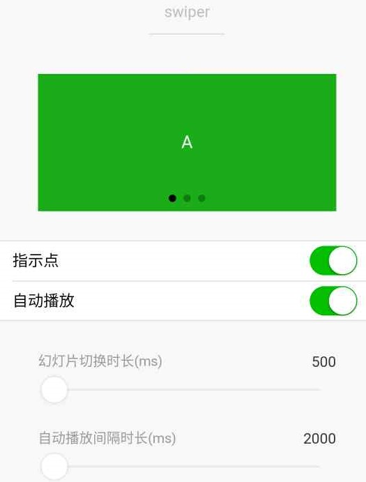
默认宽度 100% ⾼度 150px
属性名 | 类型 | 默认值 | 说明 |
indicator-dots | Boolean | false | 是否显⽰⾯板指⽰点 |
indicator-color | Color | rgba(0, 0, 0, .3) | 指⽰点颜⾊ |
indicator-active-color | Color | #000000 | 当前选中的指⽰点颜⾊ |
autoplay | Boolean | false | 是否⾃动切换 |
interval | Number | 5000 | ⾃动切换时间间隔 |
circular | Boolean | false | s是否循环轮播 |
滑块视图容器。
传智播客-黑马程序员
滑块
默认宽度和⾼度都是100%
导航组件 类似超链接标签
属性名 | 类型 | 默认值 | 说明 |
target | String | self | 在哪个⽬标上发⽣跳转，默认当前⼩程序，可选值 |
url | String | 当前⼩程序内的跳转链接 | |
open- | String | navigate | 跳转⽅式 |
open-type 有效值：
值 | 说明 |
navigate | 保留当前⻚⾯，跳转到应⽤内的某个⻚⾯，但是不能跳到 tabbar ⻚⾯ |
redirect | 关闭当前⻚⾯，跳转到应⽤内的某个⻚⾯，但是不允许跳转到 tabbar ⻚⾯。 |
switchTab | 跳转到 tabBar ⻚⾯，并关闭其他所有⾮ tabBar ⻚⾯ |
reLaunch | 关闭所有⻚⾯，打开到应⽤内的某个⻚⾯ |
navigateBack | 关闭当前⻚⾯，返回上⼀⻚⾯或多级⻚⾯。可通过 getCurrentPages() 获取当 |
exit | 退出⼩程序，target= miniProgram 时⽣效 |
富文本标签
可以将字符串解析成 对应标签，类似 vue中 v-html 功能
传智播客-黑马程序员
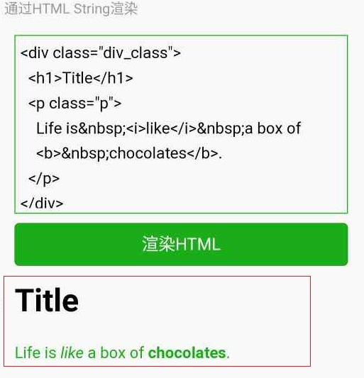
代码
// 1 index.wxml 加载 节点数组
<rich-text nodes="{{nodes}}" bindtap="tap"></rich-text>
// 2 加载 字符串
<rich-text nodes='<img
src="https://developers.weixin.qq.com/miniprogram/assets/images/head_global_z_@all.p
ng" alt="">'></rich-text>
// index.js
Page({
data: {
nodes: [{
name: 'div',
attrs: {
class: 'div_class',
style: 'line-height: 60px; color: red;'
},
children: [{
type: 'text',
text: 'Hello World!'
}]
}]
},
tap() {
console.log('tap')
}
})
传智播客-黑马程序员
nodes
属性⽀持 字符串 和 标签节点数组
属性 | 说明 | 类型 | 必填 | 备注 |
name | 标签名 | string | 是 | ⽀持部分受信任的 HTML 节点 |
attrs | 属性 | object | 否 | ⽀持部分受信任的属性，遵循 Pascal 命名法 |
children | ⼦节点列表 | array | 否 | 结构和 nodes ⼀致 |
⽂本节点：type = text
属性 | 说明 | 类型 | 必填 | 备注 |
text | ⽂本 | string | 是 | ⽀持entities |
nodes 不推荐使⽤ String 类型，性能会有所下降。
rich-text 组件内屏蔽所有节点的事件。
attrs 属性不⽀持 id ，⽀持 class 。
name 属性⼤⼩写不敏感。
如果使⽤了不受信任的 HTML 节点，该节点及其所有⼦节点将会被移除。
img 标签仅⽀持⽹络图⽚。

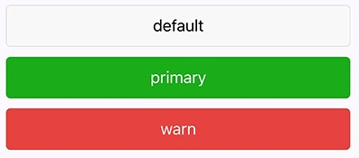
<button
type="default"
size="{{defaultSize}}"
loading="{{loading}}"
plain="{{plain}}"
>
default
</button>
传智播客-黑马程序员
属性 | 类型 | 默认值 | 必 | 说明 |
size | string | default | 否 | 按钮的⼤⼩ |
type | string | default | 否 | 按钮的样式类型 |
plain | boolean | false | 否 | 按钮是否镂空，背景⾊透明 |
disabled | boolean | false | 否 | 是否禁⽤ |
loading | boolean | false | 否 | 名称前是否带 loading 图标 |
form- | string | 否 | ||
open- | string | 否 | 微信开放能⼒ |
size 的合法值
值 | 说明 |
default | 默认⼤⼩ |
mini | ⼩尺⼨ |
type 的合法值
值 | 说明 |
primary | 绿⾊ |
default | ⽩⾊ |
warn | 红⾊ |
form-type 的合法值
值 | 说明 |
submit | 提交表单 |
reset | 重置表单 |
open-type 的合法值

传智播客-黑马程序员
值 | 说明 |
contact | |
share | |
getPhoneNumber | |
getUserInfo | 获取⽤⼾信息，可以从bindgetuserinfo回调中获取到⽤⼾信息 |
launchApp | |
openSetting | 打开授权设置⻚ |
feedback | 打开“意⻅反馈”⻚⾯，⽤⼾可提交反馈内容并上传⽇志，开发者可以登 |
open-type 的 contact的实现流程

将⼩程序 的 appid 由测试号改为 ⾃⼰的 appid
登录微信⼩程序官⽹，添加 客服 - 微信
为了⽅便演⽰，⽼师⾃⼰准备了两个账号
普通⽤⼾ A
客服-微信 B
就是⼲！
属性 | 类型 | 默 | 必 | 说明 |
type | string | 是 | icon的类型，有效值：success, success_no_circle, clear | |
size | number/string | 23 | 否 | icon的⼤⼩ |
color | string | 否 | icon的颜⾊，同css的color |
传智播客-黑马程序员
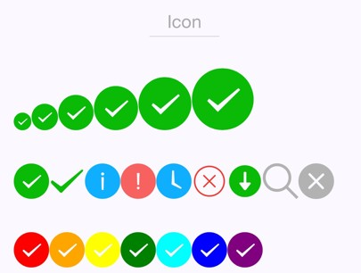
代码:
js
Page({
data: {
iconSize: [20, 30, 40, 50, 60, 70],
iconType: [
'success', 'success_no_circle', 'info', 'warn', 'waiting', 'cancel',
'download', 'search', 'clear'
],
iconColor: [
'red', 'orange', 'yellow', 'green', 'rgb(0,255,255)', 'blue', 'purple'
],
}
})
wxml
<view class="group">
<block wx:for="{{iconSize}}">
<icon type="success" size="{{item}}"/>
</block>
</view>
<view class="group">
<block wx:for="{{iconType}}">
<icon type="{{item}}" size="40"/>
</block>
</view>
<view class="group">
<block wx:for="{{iconColor}}">
<icon type="success" size="40" color="{{item}}"/>
</block>
</view>
传智播客-黑马程序员
可以通过 color属性来修改颜色
需要搭配 radio-group ⼀起使⽤

可以通过 color属性来修改颜色
需要搭配 checkbox-group ⼀起使⽤
类似vue或者react中的自定义组件
⼩程序允许我们使⽤⾃定义组件的⽅式来构建⻚⾯。
11.1. 创建⾃定义组件
类似于页面，一个自定义组件由
json
wxml
wxss
js 4个文件组成
可以在微信开发者⼯具中快速创建组件的⽂件结构
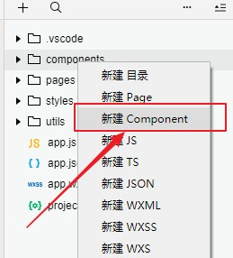
在⽂件夹内
components/myHeader
，创建组件 名为 myHeader
传智播客-黑马程序员
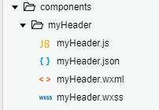
11.1.1. 声明组件
⾸先需要在组件的
json
⽂件中进⾏⾃定义组件声明
myHeader.json
{
"component": true
}
11.1.2. 编辑组件
同时，还要在组件的 wxml ⽂件中编写组件模板，在
wxss
⽂件中加⼊组件样式
slot 表⽰插槽，类似vue中的slot
myHeader.wxml
<!-- 这是自定义组件的内部WXML结构 -->
<view class="inner">
{{innerText}}
<slot></slot>
</view>
在组件的
wxss
⽂件中编写样式
注意：在组件wxss中不应使用ID选择器、属性选择器和标签名选择器。
myHeader.wxss
/* 这里的样式只应用于这个自定义组件 */
.inner {
color: red;
}
11.1.3. 注册组件
在组件的
js ⽂件中，需要使⽤ Component() 来注册组件，并提供组件的属性定义、内部数据和
⾃定义⽅法
myHeader.js
Component({
properties: {
// 这里定义了innerText属性，属性值可以在组件使用时指定
innerText: {
// 期望要的数据是 string类型
type: String,
传智播客-黑马程序员
value: 'default value',
}
},
data: {
// 这里是一些组件内部数据
someData: {}
},
methods: {
// 这里是一个自定义方法
customMethod: function(){}
}
})
11.2. 声明引⼊⾃定义组件
⾸先要在⻚⾯的
json
⽂件中进⾏引⽤声明。还要提供对应的组件名和组件路径
index.wxml
{
// 引用声明
"usingComponents": {
// 要使用的组件的名称
// 组件的路径
"my-header":"/components/myHeader/myHeader"
}
}
11.3. ⻚⾯中使⽤⾃定义组件
<view>
<!-- 以下是对一个自定义组件的引用 -->
<my-header inner-text="Some text">
<view>用来替代slot的</view>
</my-header>
</view>
11.4. 其他属性
11.5. 定义段与⽰例⽅法
Component 构造器可⽤于定义组件，调⽤ Component 构造器时可以指定组件的属性、数据、⽅法
等。
传智播客-黑马程序员
定义段 | 类型 | 是 | 描述 |
properties | Object | 否 | 组件的对外属性，是属性名到属性设置的映射表，参⻅下⽂ |
data | Object | 否 | 组件的内部数据，和 properties ⼀同⽤于组件的模板渲 |
observers | Object | 否 | |
methods | Object | 否 | |
created | Function | 否 | |
attached | Function | 否 | 组件⽣命周期函数，在组件实例进⼊⻚⾯节点树时执⾏，参 |
ready | Function | 否 | |
moved | Function | 否 | |
detached | Function | 否 | 组件⽣命周期函数，在组件实例被从⻚⾯节点树移除时执 |
11.6. 组件-⾃定义组件传参

⽗组件通过属性的⽅式给⼦组件传递参数
⼦组件通过事件的⽅式向⽗组件传递参数
11.6.1. 过程
⽗组件
把数据 {{tabs}} 传递到 ⼦组件的
⽗组件
监听 onMyTab 事件
⼦组件
触发 bindmytap 中的 mytap 事件
tabItems
属性中
⾃定义组件触发事件时，需要使⽤ triggerEvent ⽅法，指定 事件名 、 detail 对象
传智播客-黑马程序员
⽗ -> ⼦ 动态传值 this.selectComponent("#tabs");
⽗组件代码
// page.wxml
<tabs tabItems="{{tabs}}" bindmytap="onMyTab" >
内容-这里可以放插槽
</tabs>
// page.js
data: {
tabs:[
{name:"体验问题"},
{name:"商品、商家投诉"}
]
},
onMyTab(e){
console.log(e.detail);
},
⼦组件代码
// com.wxml
<view class="tabs">
<view class="tab_title" >
<block wx:for="{{tabItems}}" wx:key="{{item}}">
<view bindtap="handleItemActive" data-index="{{index}}">{{item.name}}</view>
</block>
</view>
<view class="tab_content">
<slot></slot>
</view>
</view>
// com.js
Component({
properties: {
tabItems:{
type:Array,
value:[]
}
},
/**
组件的初始数据
*/
data: {
},
/**
组件的方法列表
*/
methods: {
handleItemActive(e){
this.triggerEvent('mytap','haha');
}
}
})
11.7. ⼩结
传智播客-黑马程序员
标签名 是 中划线的⽅式
属性的⽅式 也是要中划线的⽅式
其他情况可以使⽤驼峰命名
组件的⽂件名如 myHeader.js 的等
组件内的要接收的属性名 如 innerText
12. ⼩程序⽣命周期

分为应⽤⽣命周期和⻚⾯⽣命周期
关于小程序前后台的定义和小程序的运行机制，请参考运行机制章节。
属性 | 类型 | 默认值 | 必填 | 说明 |
function | 否 | 监听⼩程序初始化。 | ||
function | 否 | 监听⼩程序启动或切前台。 | ||
function | 否 | 监听⼩程序切后台。 | ||
function | 否 | 错误监听函数。 | ||
function | 否 | ⻚⾯不存在监听函数。 |
属性 | 类型 | 说明 |
Object | ⻚⾯的初始数据 | |
function | ⽣命周期回调—监听⻚⾯加载 | |
function | ⽣命周期回调—监听⻚⾯显⽰ | |
function | ⽣命周期回调—监听⻚⾯初次渲染完成 | |
function | ⽣命周期回调—监听⻚⾯隐藏 | |
function | ⽣命周期回调—监听⻚⾯卸载 | |
function | 监听⽤⼾下拉动作 | |
function | ⻚⾯上拉触底事件的处理函数 | |
function | ⽤⼾点击右上⻆转发 | |
function | ⻚⾯滚动触发事件的处理函数 | |
function | ||
function | 当前是 tab ⻚时，点击 tab 时触发 |
12.3. ⻚⾯⽣命周期图解
传智播客-黑马程序员
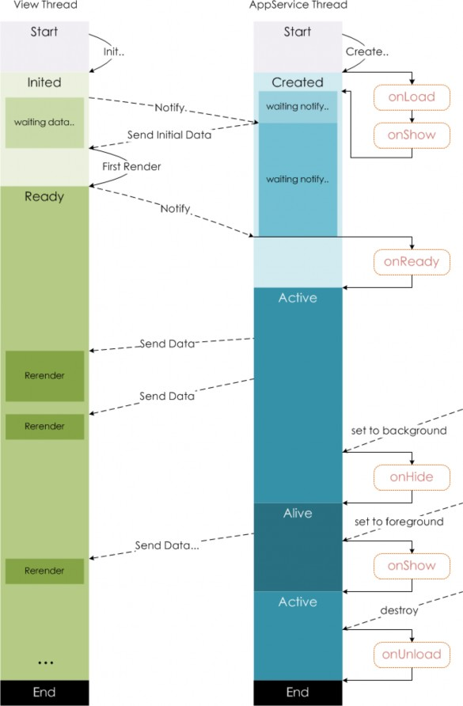
传智播客-黑马程序员